aDASHBOARDAtividade prática III: métodos da bisseção, de Newton e da secanteCálculo Numérico, Profa. Raquel J. Lobosco, UNIFESPIntegrantes: Matheus Bueno Christovão - 185302Luiz Ricardo Pereira Salles - 187569Murilo Rodrigues Damasceno dos Santos - 185308Vinicius Cruz Cuervo - 185337Notebook no Google Colab: https://colab.research.google.com/github/rjlobosco/unifesp/blob/main/Aula_8_Newton_Secantes_Calculo_Numerico.ipynb1. ObjetivoImplementar em Python os métodos da bisseção, de Newton e da secante, aplicar os três métodos a quatro funções, comparar os resultados e produzir animações que mostram o processo de aproximação das raízes. Uma raiz de f(x) é um valor r tal que f(r)=0.2. Funções investigadas e valores iniciaisf1(x)=x2-2: bisseção em [1,2], Newton com x0=1,5, secante com (x0,x1)=(1,2)f2(x)=x3-x-2: bisseção em [1,2], Newton com x0=1,5, secante com (x0,x1)=(1,2)f3(x)=e-x-x: bisseção em [0,1], Newton com x0=0,5, secante com (x0,x1)=(0,1)f4(x)=x3-2x+2: bisseção em [-2,-1], Newton com x0=-2, secante com (x0,x1)=(-2,-1)Usamos os valores sugeridos no enunciado. As quatro funções trocam de sinal nesses intervalos e a derivada não se anula neles, então os três métodos podem ser aplicados.3. MétodosBisseção: ck=ak+bk
2, mantendo a metade do intervalo em que f troca de sinal.Newton: xk+1=xk-f(xk)
f'(xk)Secante: xk+1=xk-f(xk)xk-xk-1
f(xk)-f(xk-1)4. Parâmetros e critério de paradaTolerância 10-6 e no máximo 100 iterações.Critério principal: a aproximação é aceita quando o resíduo satisfaz |f(xk+1)|<10-6.Newton e secante: se o passo |xk+1-xk| ficar abaixo de 10-6 com o resíduo ainda alto, a execução para e o caso é registrado como falha por estagnação.Bisseção: a aproximação também é aceita quando bk-ak
2<10-6, pois essa meia largura limita o erro do ponto médio.O código detecta e indica falha quando f(a)f(b)>0, quando a derivada ou o denominador da secante ficam próximos de zero, quando a aproximação deixa de ser finita e quando o limite de iterações é atingido.5. Tabela de resultados
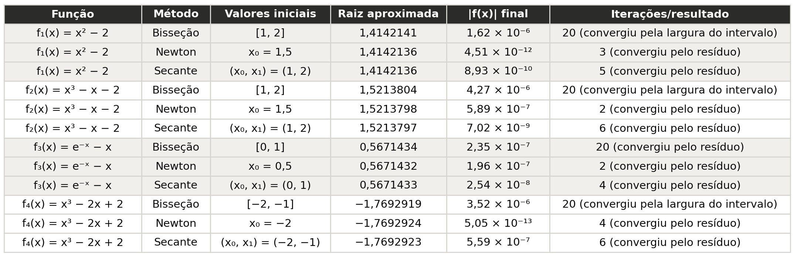
Os três métodos convergiram nas quatro funções. Iterações realizadas:Bisseção: 20 em todas as funções.Newton: 3 em f1, 2 em f2, 2 em f3 e 4 em f4.Secante: 5 em f1, 6 em f2, 4 em f3 e 6 em f4.Raízes encontradas: 2≈1,4142136, 1,5213797, 0,5671433 e -1,7692924.
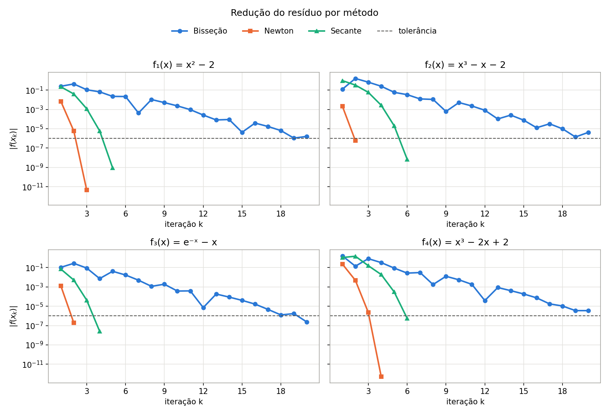
Redução do resíduo |f(xk)| por iteração, em escala logarítmica. A linha tracejada é a tolerância.6. AnimaçõesCada animação tem três painéis: a visão geral da função com a construção do método (esquerda), um zoom na iteração atual (centro) e o histórico do resíduo com o número da iteração, o valor da aproximação e |f(xk)| (direita). Na bisseção aparecem o intervalo que contém a raiz e sua meia largura; em Newton, as retas tangentes; na secante, as retas que passam pelos dois últimos pontos.
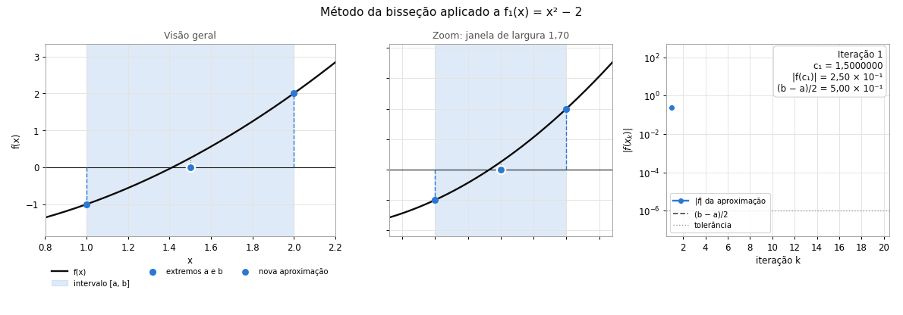
Figura 1. Bisseção em f1(x)=x2-2: 20 iterações, raiz ≈1,4142141.
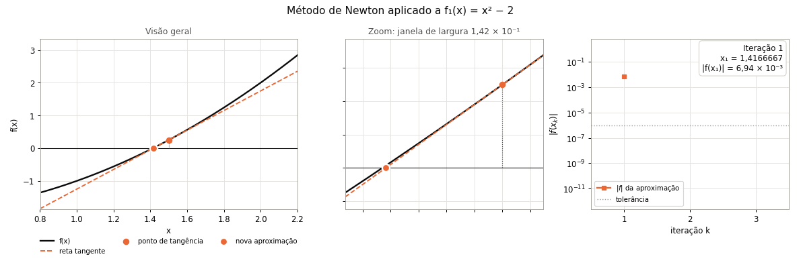
Figura 2. Newton em f1(x)=x2-2: 3 iterações, raiz ≈1,4142136.
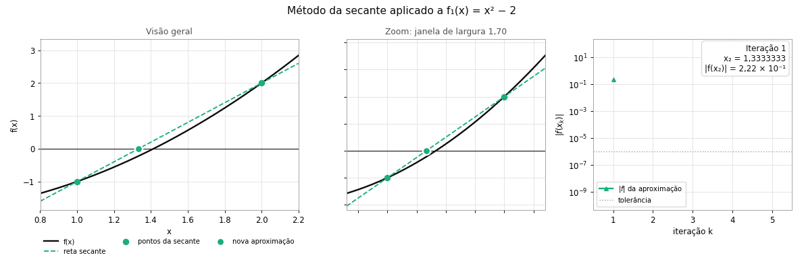
Figura 3. Secante em f1(x)=x2-2: 5 iterações, raiz ≈1,4142136.
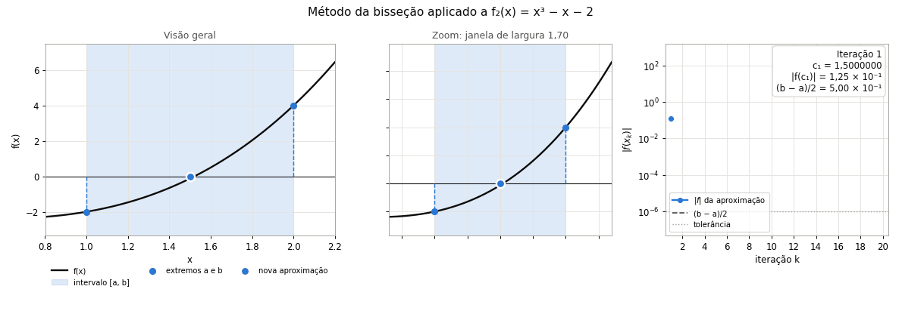
Figura 4. Bisseção em f2(x)=x3-x-2: 20 iterações, raiz ≈1,5213804.
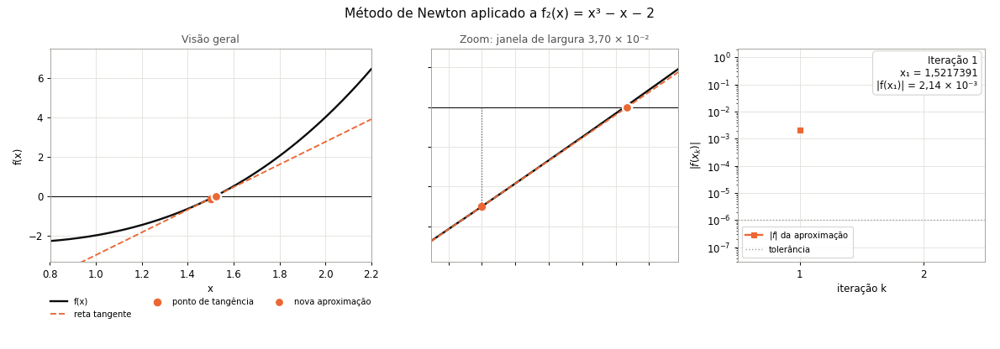
Figura 5. Newton em f2(x)=x3-x-2: 2 iterações, raiz ≈1,5213798.
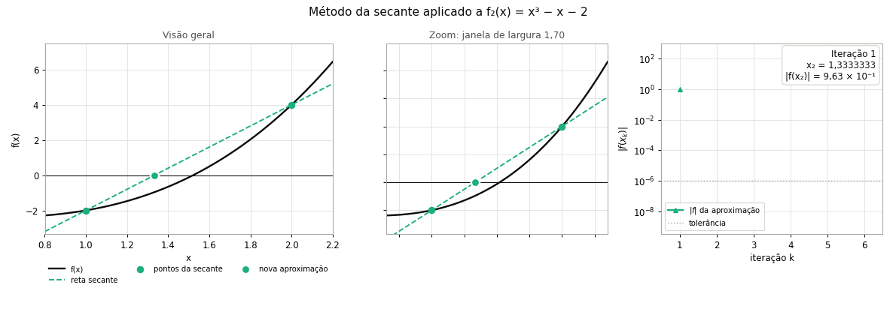
Figura 6. Secante em f2(x)=x3-x-2: 6 iterações, raiz ≈1,5213797.
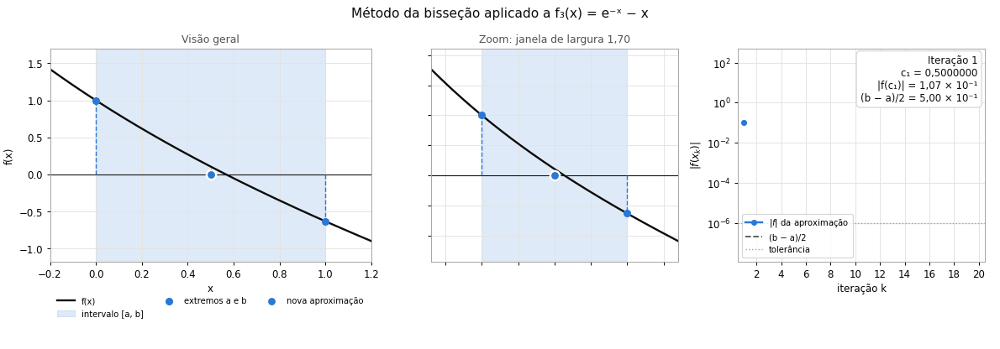
Figura 7. Bisseção em f3(x)=e-x-x: 20 iterações, raiz ≈0,5671434.
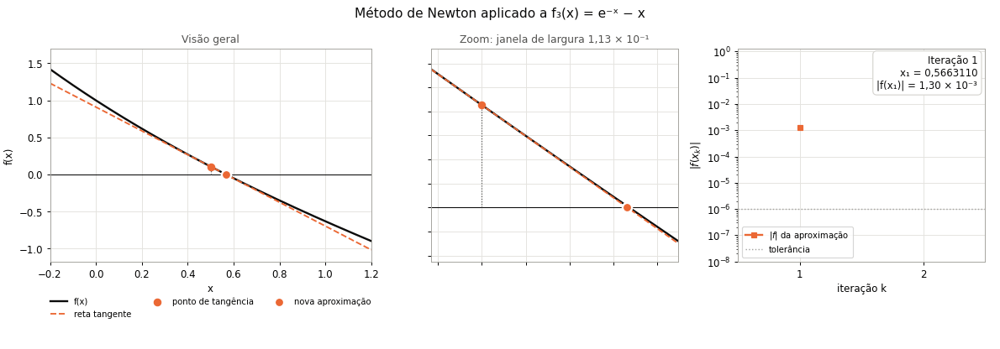
Figura 8. Newton em f3(x)=e-x-x: 2 iterações, raiz ≈0,5671432.
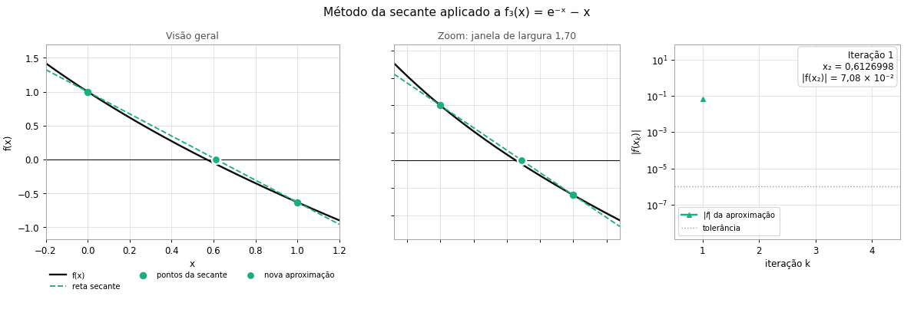
Figura 9. Secante em f3(x)=e-x-x: 4 iterações, raiz ≈0,5671433.
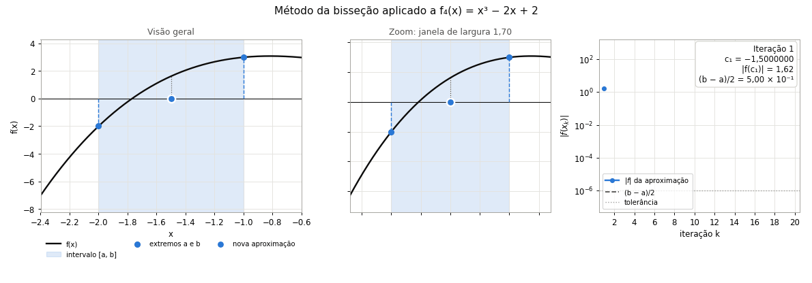
Figura 10. Bisseção em f4(x)=x3-2x+2: 20 iterações, raiz ≈-1,7692919.
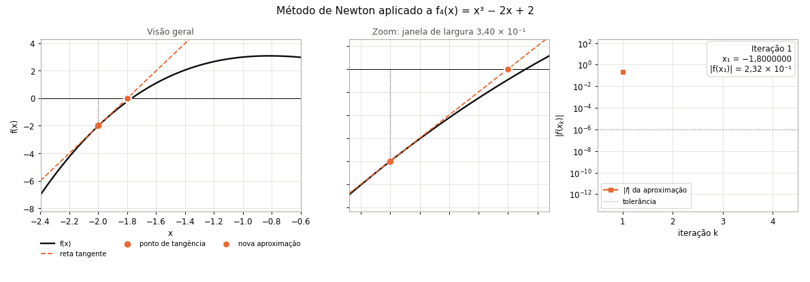
Figura 11. Newton em f4(x)=x3-2x+2: 4 iterações, raiz ≈-1,7692924.
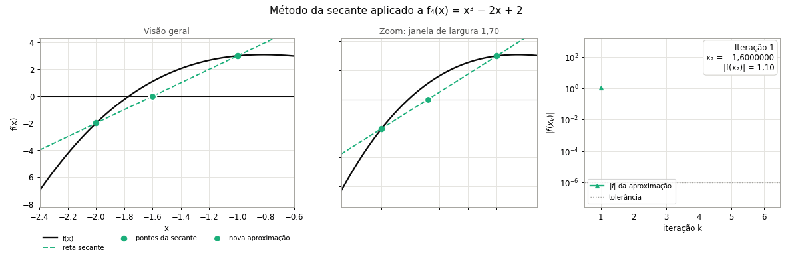
Figura 12. Secante em f4(x)=x3-2x+2: 6 iterações, raiz ≈-1,7692923.7. AnáliseA bisseção precisou de 20 iterações em todas as funções porque os quatro intervalos têm largura 1 e a meia largura 1/2k só fica abaixo de 10-6 em k=20. Newton foi o mais rápido (2 a 4 iterações), com convergência quadrática, e a secante ficou entre os dois (4 a 6 iterações), com convergência superlinear de ordem aproximada 1,618.Em f1, f2 e f4 a bisseção parou pela largura do intervalo, com resíduo entre 1,6×10-6 e 4,3×10-6. O erro da raiz é no máximo 9,5×10-7, e perto da raiz o resíduo vale cerca de |f'(r)| vezes o erro; como |f'(r)| é aproximadamente 2,8, 5,9 e 7,4 nessas funções, o resíduo fica um pouco acima da tolerância.Em Newton, o número de iterações acompanhou a distância entre x0 e a raiz: 2 iterações em f2 e f3, 3 em f1 e 4 em f4, cujo x0=-2 está a cerca de 0,23 da raiz. Na secante, f2 e f4 exigiram 6 iterações: essas cúbicas têm curvatura maior no intervalo, a primeira reta secante se afasta mais da curva e o resíduo depois da primeira iteração é cerca de 1, contra 0,22 em f1 e 0,07 em f3.O número de iterações não é o custo total: Newton avalia f e f' a cada passo, a secante avalia apenas f e a bisseção garante a convergência sempre que há troca de sinal no intervalo.8. ConclusãoCom os valores sugeridos, os três métodos encontraram a mesma raiz em cada função. Quando a derivada é fácil de obter, Newton é a escolha mais econômica; quando não é, a secante é uma boa alternativa. A bisseção é útil para obter uma aproximação com erro garantido ou um bom valor inicial para os outros dois métodos.